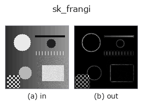

texture op• Datenarten: image → image
• Aufruf: fullseye.apply(img, "sk_frangi", a=0.5, b=0.5) (das 2-D-Modell ist ein Bild plus zwei skalare Regler a,b∈[0,1])
• HALCON-Äquivalent: lines_gauss (Bedeutung und Parameter sind in der HALCON-Referenz nachzulesen)

*Die Abbildung ist die tatsächliche Ausgabe auf einer synthetischen 128×128-Eingabe. Links Eingabe, rechts Ausgabe. Punktwolken als Draufsicht-Streudiagramm (Helligkeit = z), 1-D-Reihen als Linie, Volumen als Maximum-Projektion entlang z, Videos als mittleres Bild, komplexe Bilder als Betrag; Rückgabewerte, die kein Bild ergeben, werden als Werte gezeigt.*
*Die Ausgabe ist in einer viridis-artigen Falschfarbe dargestellt (dunkles Violett = klein, Gelb = groß), damit ein Feld von Größen — Abstand, Phase, Orientierung, Tiefe — lesbar ist.*
Regler a durchfahren (0,1 / 0,5 / 0,9, der andere Regler auf Standard):
▸ sk_frangi: Regler a durchfahren (Doku-Website)
Regler b durchfahren (0,1 / 0,5 / 0,9, der andere Regler auf Standard):
▸ sk_frangi: Regler b durchfahren (Doku-Website)
Auf anderen Bildern (synthetische Szene / Foto / Münzen. Obere Reihe: Eingaben, untere Reihe: deren Ausgaben. Regler auf Standard):
▸ sk_frangi: andere Eingaben (Doku-Website)
*Keine Farb-Eingabe (H,W,3) gezeigt: dieser Op behandelt den Farbkanal als dritte Raumachse (vermischt Kanäle). Pro Kanal aufrufen.*
Frangi-Filter zur Erkennung röhrenförmiger Strukturen (vesselness filter). Erkennt langgestreckte röhrenförmige Strukturen wie Blutgefäße, Falten oder Flüsse anhand der Eigenwertverhältnisse der Hesse-Matrix.
Entspricht HALCONs lines_gauss(Detect lines and their width.) (Näherung; es liefert weder Linienbreiten noch XLD-Konturen, nur ein Bild der Antwortstärke). Am 2026-08-30 wurden a und b verdrahtet: a ist der Skalenbereich (sigmas=range(1, 2+round(a*4)) - variiert das maximale σ über 1-5; bei a=0.5 bitidentisch mit dem alten festen Bereich range(1,4)), b variiert Frangis Blobness-Empfindlichkeit β über 0.15-0.85 (bei b=0.5 gleich dem skimage-Standard 0.5, die Standardausgabe ändert sich also nicht). Da standardmäßig black_ridges=True gilt (es erkennt dunkle Röhren auf hellem Hintergrund), fällt die Antwort schwach aus, sofern das Bild nicht schwarze Linien auf weißem Hintergrund zeigt.
Vergleichbarkeit der Werte (gemessen): Die Ausgabe wird auf das Maximum des jeweiligen Bildes normiert (das Ausgabemaximum ist stets 1.0, und eine Skalierung der Eingabe lässt die Ausgabe unverändert). Werte sind daher nicht bildübergreifend vergleichbar — ein Merkmal gleicher Stärke erhält je nach dem stärksten Merkmal im Bild einen anderen Wert, und in einem Bild mit nur schwachen Merkmalen wird das Rauschen auf 1.0 angehoben. Für einen Vergleich über Bilder hinweg auf eine gemeinsame Referenz umskalieren.
Leeres Bild (gemessen): Ein Bild gleichmäßiger Helligkeit liefert unabhängig von der Helligkeit ein leeres Ergebnis (jedes Pixel ist Hintergrund 0). Reinweiß und Reinschwarz verhalten sich gleich; Helligkeit allein detektiert nichts.
• Leitfaden zur Familie gallery2d_texture_freq
• Katalog der Beispieldaten (Download-URLs / Lizenzen) — 2-D nutzt skimage.data (BSD/Public Domain) plus synthetische Bilder, 3-D nennt Download-URLs echter Datenquellen (Stanford, PDS, …).
• Herkunft und Literatur der Operatoren — die Quellen der Forschung/Verfahren, auf denen diese Operatorfamilie beruht.
• Der kanonische Algorithmus (Autor, Jahr) und seine Anwendungen stehen im Familienleitfaden oben.
Das Programm unten ist nachweislich lauffähig (gleiche Eingabe wie die Abbildung). In der Studio-Hilfe wird dieser Block zu Schaltflächen, die es sofort laden und ausführen.
sk_frangi 0.50 0.50
▸ Diese Pipeline laden · Laden & ausführen
• gallery2d_texture_freq — py -3.11 examples/gallery2d_texture_freq.py
• poc_fresco_craquelure — py -3.11 examples/poc_fresco_craquelure.py
• poc_solar_el_inspection — py -3.11 examples/poc_solar_el_inspection.py
image als Eingabe)identity · gaussian · mean_box · bilateral · unsharp · median · min_filter · max_filter
texture)std_filter · local_bimodality · local_std · scale_select_std · bootstrap_std_error · structure_tensor_orientation · structure_tensor_coherence · gabor
*Provenance: ops.py — 2D Operator-Registry. Diese Notiz wird von tools/opdocs.py md erzeugt (nicht von Hand bearbeiten).*
© 2026 Kazufumi Furuse — Fullseye operator documentation. Licensed under Apache-2.0.